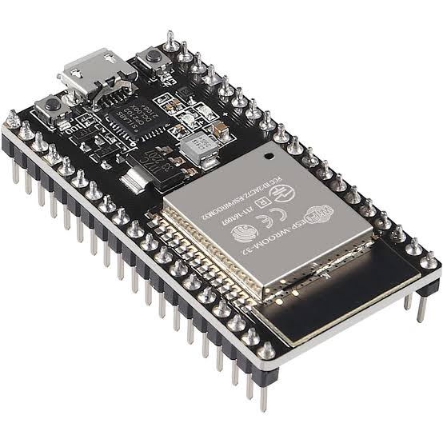
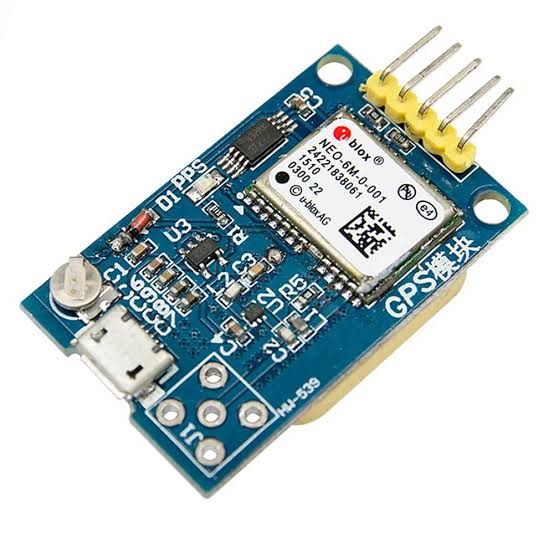
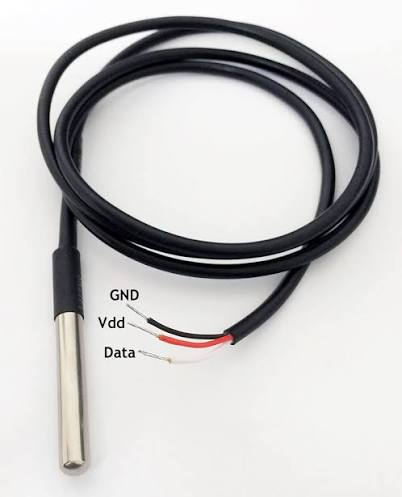
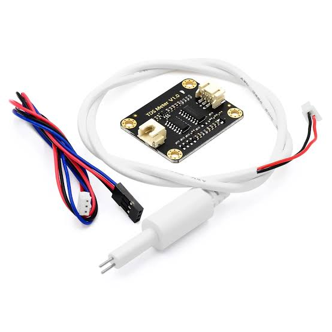
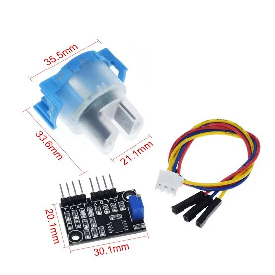
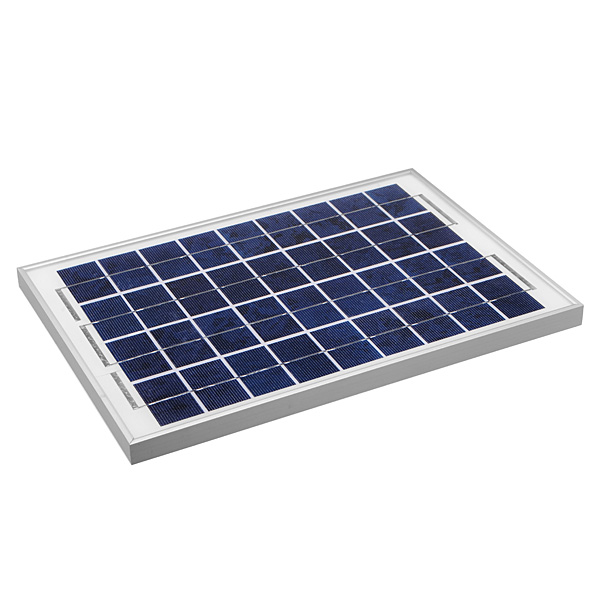
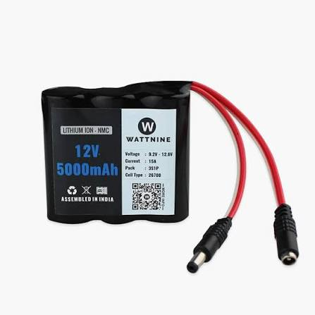

Hardware Components

ESP32 Development Board
The main controller responsible for collecting sensor data, processing it, and transmitting it wirelessly.

NEO-6M GPS Module
Provides accurate positioning of the buoy for tracking and monitoring its deployment location.

DS18B20 Temperature Sensor
Measures water temperature with high precision to detect environmental changes.

TDS Sensor
Measures the concentration of dissolved solids to evaluate water quality.

Turbidity Sensor
Detects suspended particles and water clarity, indicating pollution levels.

Solar Panel
Provides renewable energy to power the smart buoy, ensuring long-term operation with minimal maintenance.

ESP32 Camera
used for live underwater image streaming to visually monitor coral reef health.

Battery
Stores energy for the smart buoy, ensuring continuous operation.